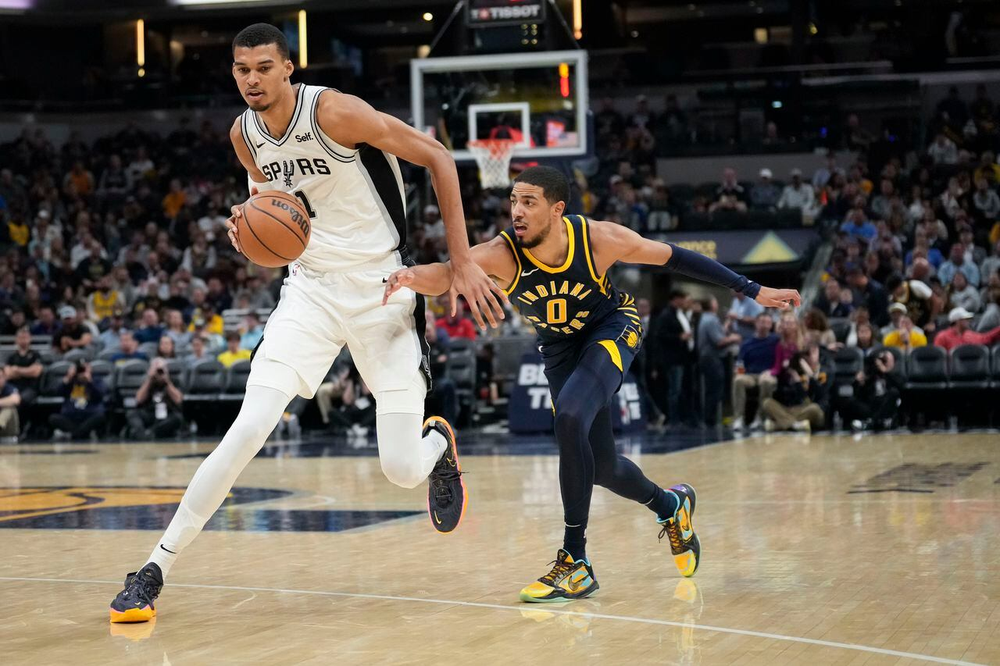

Has the NBA's Long-Range Revolution Gone Too Far?
When the defending champion Boston Celtics fired up 61 3-pointers on opening night against the New
York Knicks, tying the second-most attempts in a regulation NBA game, the result went beyond a
nationally televised blowout.
It sparked a season long conversation about how many 3-pointers are too many. It's not just Boston.
After leveling out around 35 3-point attempts per game the past five years, already an increase of
more than 50% from what we saw a decade ago (22.4 per game), the rate of long-distance attempts has
gone up to 37.5 so far in 2024-25. Against the backdrop of poor national TV ratings early in the
season, 3-pointers became a convenient explanation.
For now, the league's analysis shows fans are generally positive about the NBA's style of play and
the volume of 3s. No substantial changes are likely to happen any time soon.
Still, that didn't stop one of the godfathers of the 3-point revolution, Philadelphia 76ers
president of basketball operations Daryl Morey, from saying onstage at this month's MIT Sloan Sports
Analytics Conference that "we have hit the point where [the 3-pointer is] turning toward making the
game worse."
Let's unpack what the data says about all those 3s, Morey's argument that the shot is too valuable,
and what fans really think about the state of the game.
Celtics pushing the envelope -- and narrative
This time a year ago, it wasn't really clear that shooting more 3s was in fact the right approach
for NBA teams. Teams had long since completed the low-hanging fruit of converting catch-and-shoot
2-pointers into more valuable 3-point attempts. During Morey's tenure with the Houston Rockets,
shooting more 3s was essentially a hack.
Between 2004-05 and 2018-19, the team that attempted the most 3s in a game won 52% of the time, good
enough to put a team three games above .500 all by itself. In part because of the success the
Rockets enjoyed, that trend reversed. During the 2023-24 regular season, teams that shot more 3s won
just 48% of the time, the fourth time in a five-year span they had been below .500.
But the trend then flipped again. The team that took more 3s went 51-28 (.646) in the 2024 playoffs,
and the top two teams in the rate of taking 3s during the regular season met in the Finals with
Boston knocking off the Dallas Mavericks.
Starting with the Celtics' opening night win -- when they tied the NBA record by making 29 3s and
spent the last five minutes firing up long-range attempts in an effort to break it -- it quickly
became apparent that 3-pointers would be on the rise.
"It is interesting to contemplate an alternate universe where that game didn't happen the way it did
to see whether one game could have driven such a significant narrative," NBA executive vice
president of strategy and analytics Evan Wasch told ESPN. "But it certainly does seem that was a
launching-off point for a lot of the discussion that then sustained itself through the coming
months."
It didn't help that the NBA's national TV viewership was down during the first two months of the
season. Three NBA double-headers went up against a highly rated World Series between the Los Angeles
Dodgers and New York Yankees, including the Knicks and Los Angeles Lakers both playing games the
same night as the thrilling Game 1.
The lagging ratings "created a window for people to pick their favorite issue -- which this season
was the volume of 3-pointers -- and attribute the viewership drop to the 3-point revolution or the
3-point increase without any evidence that was the case," Wasch said at a Sloan Sports Analytics
Conference panel alongside Morey.
It became difficult for the NBA to shake that notion and might have begun to influence how fans
watched the games. Wasch's team found evidence in the league's survey tracker of fans and analysis
of social media sentiment that increasing frustration with the number of 3s and style of play began
to crop up a month into the season.
"That was a signal to us that either there's a bit of a lag in this data and how fans perceive the
game or some of the perception is actually being shaped by the conversation that's going on," Wasch
said. Nonetheless, it's impossible to deny that there are more 3-pointers being shot in NBA games
than ever before. After a brief period when it looked like we might have hit peak 3s, they're back
on the rise. And Morey thinks he knows the reason.
'It breaks the game': Time to adjust the 3-point shot?
When Morey used the Sloan panel -- provocatively titled "Have the nerds ruined basketball?" -- to
encourage the NBA to make changes and reduce the volume of 3s, it was akin to Frankenstein asking
the authorities to stop his monster. Outside of all-time leader Stephen Curry, no individual is more
connected with the growth in 3-point rate than Morey, who designed the Rockets to push for
long-distance attempts to heights not reached again until this season's Celtics.
Starting with its G League affiliate in Rio Grande Valley, which served as a lab of sorts for the
NBA counterpart, Houston cut out nearly all 2-point attempts outside the paint while playing at a
fast pace. The Rockets became the first team in league history to attempt more 3s than 2-pointers en
route to a franchise-record 65 wins in 2017-18. Morey was so associated with the Rockets' style of
play that it was nicknamed after a portmanteau of his name and the book that introduced baseball
analytics to the general public: "Moreyball."
To be clear, Morey didn't exactly object to the current rate of 3s. Instead, his issue was a matter
of game design.
When the 3-point line was first introduced, Morey argued, the dramatic benefit was a necessary
inducement to get players to shoot from longer range -- or, perhaps more accurately, for their
coaches to let them despite a relatively low completion rate.
It wasn't until 1986-87, the eighth year of the 3-pointer, that the NBA collectively shot better
than 30% from beyond the arc. It took another six seasons, in 1992-93, for the league to shoot well
enough for the average 3 to be worth more than a point. By now, with players shooting 36% on 3s, the
typical attempt produces 1.07 points. To make a 2-pointer equally valuable, players would have to
shoot 53.5%. Hence Morey discouraging his team's players from attempting 2s outside the paint, which
the league collectively hits at a 42% clip -- just 17% better than the accuracy on 3s, far less than
the 50% difference in value.
"I don't think it's the fault of the teams or the analysts out there because their job is just to
win."
— Daryl Morey, Philadelphia 76ers President of Basketball Operations
"If the best players in the league taking wide-open 8-to-15 foot shots is worse than a heavily
contested, off-the-dribble 3, that is bad for the game," Morey said, "and I think it's the
responsibility of the league office to take a look at this because teams are just going to
optimize."
For the most part, the volume of 3s isn't a major talking point among league executives. They're
more concerned with trying to put together the best team possible than producing the most compelling
product on the floor.
"I don't think it's the fault of the teams or the analysts out there because their job is just to
win," Morey said, "but to me the bottom line is [the 3] was added many years ago and it's 50% more
than other shots. That's simply too much. It essentially breaks the game."
Providing the NBA's perspective on the Sloan panel, Wasch countered that game design matters only to
the degree it produces an entertaining product for fans. And the NBA is still finding that fans are
more positive than negative about long-range shooting.
Too many 3s? No issue for the NBA -- for now
When asked about the 3-point topic, NBA commissioner Adam Silver has acknowledged the possibility of
tweaks to change the style of play.
"Historically, at times, we've moved the 3-point line," Silver said at the NBA Cup final in Las
Vegas last December. "I don't think that's a solution here because then, I think when we look at
both the game and the data, I think that may not necessarily [create] more midrange jumpers, if
that's what people want, but more clogging under the basket."
He added: "I watch as many games as all of you do, and to the extent that it's not so much a 3-point
issue. But that [to] some of the audience, some of the offenses start to look sort of cookie cutter
and teams are copying each other. I think that's something we should pay attention to."
By the All-Star Game in February, Silver struck a somewhat more optimistic tone about how NBA
basketball is played.
"We're paying a lot of attention to it," he said. "I'm never going to say there isn't room for
improvement. We'll continue to look at it and study it, but I am happy with the state of the game
right now."
"Fans have loved the 3-point revolution. They love pace and space, they love the speed and
physicality of the players."
— Evan Wasch, NBA Executive Vice President of Strategy and Analytics
Overall, Wasch's summation of what the NBA has learned from fan research was quite similar.
"Generally it's quite positive," he said in response to Morey's assessment. "Fans have loved the
3-point revolution. They love pace and space, they love the speed and physicality of the players,
they love shots around the basket. There's a lot of positive trends there."
"There's an open question whether we're now going too far and need to scale back a little bit to
bring back some of the fans who may have been disillusioned by what they're seeing, but I certainly
don't believe that there's this fundamental problem with the game design because all that matters is
what product we put out there for the fans."
The league's survey panel shows younger fans are more positive about the style of play and volume of
3s than older ones, though Wasch said the difference was not statistically significant. However, the
tone of the discussion doesn't always match the statistical reality.
On stage at Sloan, Celtics vice president of basketball operations Mike Zarren expressed frustration
with the notion that all teams play the same because they all make heavier use of 3-pointers than
their predecessors. (This season's lowest team in 3-point volume, the Denver Nuggets, would have led
the NBA as recently as 2013-14.)
"The media narrative that all the teams are coming down and playing one style of play and jacking
3s, I think, is not true," Zarren said. "Most of the discussion is not [about] Daryl's game design
discussion ... It's, 'Everybody has to play the same style where we just come down and jack,' and
that's not what's happening in the NBA."
Could we see even more 3s?
Wasch noted his group had studied the variation in play types from team to team and found no
difference in terms of the diversity from past seasons in the sample. Along the same lines, the
difference in 3-point attempt rates between Boston and Denver this season is just as large as the
average gap since 1996-97. It's the average, not the distribution, that has shifted.
Quietly, the Celtics have been moving back toward the pack in terms of 3-point tries. Over the
season's first 25 games, Boston averaged 51.3 3-point attempts, good for 56% of the team's shots
from the field. Since then, the Celtics are down to a mere 46.5 3s per game, or 52% of all shots.
Still, as with the Morey-era Rockets, the Celtics' playoff results as the likely No. 2 seed in the
Eastern Conference will serve as a referendum on how many 3s are too many -- even if they lose to
the East-leading Cleveland Cavaliers, who rank fifth in 3-point attempt rate.
Conversely, a long postseason run by the Nuggets, who rank third in offensive rating, might serve as
a needed reminder that there's more than one way to succeed offensively.
Either way, we're likely to see more 3s before we see fewer. Younger players have driven much of
this season's increase in long-distance attempts, particularly off the dribble.

Victor Wembanyama who stands at 7 foot 3 inches dribbes past Tyrse Haliburton. (Aj Mast/AP)
Witness Victor Wembanyama, who attempted nearly nine 3-point attempts per game in his second NBA
season -- more than former all-time 3-point leader Ray Allen averaged in any season during his Hall
of Fame career.
At some point, the NBA will run out of long 2s to push back behind the line. The notion that players
are being encouraged to turn down layups and dunks in favor of 3s is a pervasive misconception about
the analytics-based rise in 3-point rates. The share of shots in the paint is largely unchanged in
the 12 seasons for which we have Second Spectrum analysis of camera-tracking data, with higher rates
in the past three seasons.
Nonetheless, despite the popular notion that teams will eventually sell out so much defending the
3-point line that midrange shots become relatively more valuable, the only way other leagues have
found to decrease their 3-point rates has been to move the line back.
As recently as 2018-19, NCAA Division I men's basketball games featured more 3s as a percentage of
all shots than NBA games, but the following season the line was moved back to the FIBA distance (a
maximum of 22 feet, 1.75 inches, as compared to the NBA's 23-foot, 9-inch max). The NCAA saw 3s drop
from 39% of shots to 37.5%, and the men's pro game now easily outpaces top college games in
long-distance attempts.
There might be a time when 3-attempts increase to where they become half the shots league wide. For
now, the 3-point rates don't seem like a problem for the NBA.
"When the data is clear, we act," Wasch said. "We're not just here with our heads in the sand. On
this issue, I think what we're saying is there may be space for changes, but we're not at the point
where something drastic is needed, and we're not at the point where there's definitely a consensus
from stakeholders that we need to do anything at all."
This story has ben reproduced as part of coursework for the Philip Merrill College of Journlaism at
the University of Maryland, College Park. It was orginally published by ESPN.